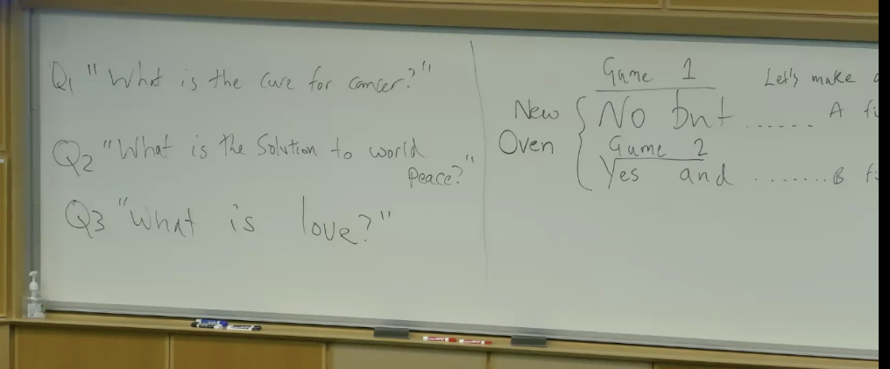

sequenceDiagram
participant User1
participant User2
User1->>User2: Let's build a new oven with steel.
User2->>User1: No, but sand and steel could generate heat when we use it.
User1->>User2: No, but we could add an insulation layer.
User2->>User1: No, but the steel oven would be heavy.
User1->>User2: No, but we could make it from lightweight steel.
User2->>User1: No, but lightweight steel could cause harmful radiation.
User1->>User2: No, but we could coat it with a safe protective layer.
I didn’t expect a communication class to turn into an improv show, but that’s exactly what happened when Dr. Kanu Pandey1 joined our COMM 41902 session as a guest lecturer. We found ourselves playing “Yes, and…,” “No, but…,” and “Doctor Know-It-All”, though our teammates weren’t just classmates. It included an AI.
The result? A mashup of comedy, chaos, and some surprisingly deep lessons on how we learn.

Part 1: No, but…
In this section, we were asked to have a discussion with our classmates about a completely new kind of oven—one that has never existed on earth. What follows is the record of our debate, presented as a conversation.
Our human version of the game proved one thing: give us enough “No, but…” and we can argue forever with mountains of ideas and the objections of them. But humans eventually get tired or run out of ideas. Thus professors let us opened up AI (we chose ChatGPT-4o here) and threw it into the game.
sequenceDiagram
participant User
participant Assistant
User->>Assistant: Let's play a game where you respond with a sentence that always starts with "No, but..." OK?
Assistant->>User: No, but I’m totally ready to play along with your game!
User->>Assistant: Let's build a new oven with steel.
Assistant->>User: No, but we could design a unique oven using steel that enhances heat retention and efficiency.
User->>Assistant: No, but sand and steel could generate heat when we use it.
Assistant->>User: No, but combining sand and steel can help manage and distribute heat effectively in high-temperature environments.
User->>Assistant: No, but the steel oven would be heavy.
Assistant->>User: No, but the heavy steel could make the oven more durable and long-lasting.
User->>Assistant: No, but we could make it from lightweight steel.
Assistant->>User: No, but using lightweight steel alloys could reduce the oven’s weight without sacrificing strength.
Well, it seems that when we are limited to the “No, but…” sentence pattern and keep on just refuting each other, in the end we don’t actually get any workable solution or function for our ovens, whether with human beings or with LLMs. And since in the conversation with LLMs we only give it our debate records line by line, the logic turns out to be rather contradictory and not coherent at all. But you can still see that even when forced to use the “No, but…” pattern, it still tries hard to pick up from what we said. For example:
User → Assistant: No, but we could make it from lightweight steel. Assistant → User: No, but using lightweight steel alloys could reduce the oven’s weight without sacrificing strength.
Logically speaking, this is not really refuting us but actually supplementing what we said, which makes the sentence feel a bit ridiculous and messy. In this case, the human conversation is more logical.
Part 2: Yes, and…
Just when our steel oven had turned impossibly heavy and slightly dangerous, Dr. Pandey introduced the next game: “Yes, and….” This time, the rules flipped: no more rejection, only acceptance. And that’s when our oven started glowing with magic and baking bRoundnies made of unicorn hair and cinneman rolls made of diamonds.
sequenceDiagram
participant User1
participant User2
User1->>User2: Let's make a new oven with colorful glows and magic.
User2->>User1: Yes, and let's use it to bake bRoundnies with unicorn hair.
User1->>User2: Yes, and what other magical desserts could we make in our enchanted oven?
User2->>User1: Yes, and we could make desserts with diamonds on them.
User1->>User2: Yes, and we could sell them to the world and become rich.
User2->>User1: Yes, and the diamond cinnamon roll would be delicious.
User1->>User2: Yes, and the cinnamon roll could refract light into rainbow colors.
User2->>User1: Yes, and we would never tell anyone our secret recipe is the oven.
Things turned out great, didn’t they? Instead of just vetoing one idea after another, we started building something with both business value and aesthetic appeal 😉. Now let’s see how quickly absurd ideas can snowball when nobody is allowed to say “no” in a conversation with an LLM (this time we used Claude-3.5-Sonnet).
sequenceDiagram
actor U as User
box rgb(255,255,191) Claude
participant L as LLM
end
U ->> L: Let's play a game where you respond with a sentence that always starts with "Yes, and..." OK?
L ->> U: I'd love to play that game! I'll respond to whatever you say with "Yes, and..." to build upon your ideas. Please start!
U ->> L: Let's make a new oven with colorful glows and magic.
L ->> U: Yes, and we could make the glowing colors change based on the temperature inside—purple for low heat, bright red for the highest settings, plus sparkly effects when the timer goes off!
U ->> L: Yes, and let's use it to bake bRoundnies with unicorn hair.
L ->> U: Yes, and the unicorn hair will make the bRoundnies sparkle and give everyone who eats them the ability to speak to animals for one hour!
U ->> L: Yes, and what other magical desserts could we make in our enchanted oven?
L ->> U: Yes, and we could bake phoenix feather soufflés that float in mid-air and never fall flat, plus mermaid scale cookies that change flavor every time you take a bite!
U ->> L: Yes, and we could make desserts with diamonds on them.
L ->> U: Yes, and the diamonds could be made from crystallized moonlight that melts in your mouth, makes you glow from within, and gives you sweet dreams that night!
U ->> L: Yes, and the diamond cinnamon roll would be delicious.
L ->> U: Yes, and when people bite into the diamond cinnamon roll, they'd hear tinkling music and see tiny shooting stars swirling aRound their heads, while the cinnamon creates spirals of golden sparkles in the air!
U ->> L: Yes, and the cinnamon roll could refract light into rainbow colors.
L ->> U: Yes, and each rainbow beam could taste like a different flavor—the red beam like strawberries, the orange beam like citrus, and the purple beam like magical grape stardust that makes you levitate for a few seconds!
The first thing I noticed in our “Yes, and…” conversation with the LLM is that its responses kept getting longer, and this time the logic actually felt much smoother. It was almost like playing an endless chain game of imagination, where each turn added something new and wild. Both sides kept piling ideas on top of each other, and the stories grew more and more absurd and fantastic. Still, there are obvious gaps when you look closely. For example, in our conversation with the LLM, it mostly just expanded on the ideas we had already suggested: we said make dessert from unicorn hair, and it followed with phoenix and mermaid. But it probably would not invent a completely different idea, like using diamonds to make cinnamon rolls or discussing how to market them. That kind of leap is something we, as humans, are more likely and tend to make.
Part 3: Doctor Know-It-All
After endless contradictions with No, but… and wild cooperation with Yes, and…, our professor decided to raise the stakes: what if we had to answer questions together, but each of us could only say one word at a time? That’s how we met our next challenge—Doctor Know-It-All.
Let me start with a small example, just in case you’re like me and have never heard of this game before. Suppose the topic is: What did you have for breakfast today? And there are 4 participants, each of them say a word one by one, and we would get (each color represent a single participant here):
flowchart LR %% Round 1 subgraph Round 1 direction LR n1["I"]:::c1 --> n2["have"]:::c2 --> n3["a"]:::c3 --> n4["sandwich"]:::c4 end %% Round 2 subgraph Round 2 direction LR n5["and"]:::c1 --> n6["a"]:::c2 --> n7["cup"]:::c3 --> n8["of"]:::c4 --> n9["coffee"]:::c1 --> n10["now"]:::c2 end n4 -.-> n5 classDef c1 fill:#6FACE7,stroke:#4a8fce,color:#000; classDef c2 fill:#A7F3D0,stroke:#34D399,color:#000; classDef c3 fill:#FDE68A,stroke:#F59E0B,color:#000; classDef c4 fill:#FCA5A5,stroke:#EF4444,color:#000;
And once we get this whole sentence, we’re done! Isn’t that simple? Believe me, you’ll love this game!
In this game, we start playing with among 4 persons. Take a look at the following chart and our topic is “What is the solution to world peace?”
flowchart LR %% Round 1 subgraph Round1 direction LR n1["I"]:::c1 --> n2["was"]:::c2 --> n3["supposed"]:::c3 --> n4["to"]:::c4 end %% Round 2 subgraph Round2 direction LR n5["do"]:::c1 --> n6["some"]:::c2 --> n7["warm"]:::c3 --> n8["and"]:::c4 end %% Round 3 subgraph Round3 direction LR n9["cheerful"]:::c1 --> n10["stuff"]:::c2 --> n11["and"]:::c3 --> n12["express"]:::c4 end %% Connect rows n4 --> n5 n8 --> n9 %% Colors classDef c1 fill:#6FACE7,stroke:#4a8fce,color:#000; classDef c2 fill:#A7F3D0,stroke:#34D399,color:#000; classDef c3 fill:#FDE68A,stroke:#F59E0B,color:#000; classDef c4 fill:#FCA5A5,stroke:#EF4444,color:#000;
flowchart LR %% Round 4 subgraph Round4 direction LR n13["my"]:::c1 --> n14["own"]:::c2 --> n15["appreciation"]:::c3 --> n16["to"]:::c4 end %% Round 5 subgraph Round5 direction LR n17["the"]:::c1 --> n18["ones"]:::c2 --> n19["that"]:::c3 --> n20["I"]:::c4 end %% Round 6 subgraph Round6 direction LR n21["loved."]:::c1 end %% Connect rows n16 --> n17 n20 --> n21 %% Colors classDef c1 fill:#6FACE7,stroke:#4a8fce,color:#000; classDef c2 fill:#A7F3D0,stroke:#34D399,color:#000; classDef c3 fill:#FDE68A,stroke:#F59E0B,color:#000; classDef c4 fill:#FCA5A5,stroke:#EF4444,color:#000;
Now, what if we change the fourth person to an LLM? What would happen then? Let’s look at the next chart.
sequenceDiagram
actor U as Users
box rgb(255,255,191) ChatGPT
participant L as LLM
end
U ->> L: Let’s play this game: we had to answer questions together, but each of us could only say one word at a time. <br> That’s how we met our next challenge—Doctor Know-It-All. There are 4 participants, each of them says a word one by one. You are the fourth person. Understand?
L ->> U: Understood!
U ->> L: The topic is “What is the solution to world peace?" We (3 persons) go first: I was supposed
L ->> U: to
U ->> L: do some warm
L ->> U: up
U ->> L: and cheerful stuff
L ->> U: before
U ->> L: everything goes wrong
L ->> U: and
U ->> L: express my own
L ->> U: thoughts
U ->> L: and appreciation to
L ->> U: everyone
U ->> L: that I loved.
When comparing the human-only version and the human+AI version of Doctor Know-It-All, the differences become clear. The human version: “I was supposed to do some warm and cheerful stuff and express my own appreciation to the ones that I loved”, read almost like a fluent and complete personal reflectioninfused with temperature inside. Conversely, when we look at the Ai-version, it sometimes producing awkward turns like “warm / up”, yet the sentence still manages to cohere in the end. LLM focuses on keeping the sequence grammatically plausible, even if the result feels mechanical or oddly stitched together while our humans mor focus on the whole sentence completeness and emotional depth.
If you want to try this little game with your friends or other LLM models, I’ve dropped all three of the questions we played with in class right here for you：

Summary
Through these three improv games, I realized that each pattern mirrors a different way we approach knowledge and creativity. And we cannot learning and research without any of them.
With No, but… we see that endless refutation alone will not create anything; when we encounter something reasonable and useful, we should allow ideas to unfold and develop instead of blocking them. With Yes, and… we experience the strength of building on one another’s ideas, showing how imagination grows when possibilities are accepted. And Doctor Know-It-All reveals that even fragmented voices, whether human or machine, can come together to form meaning when connected, even somtimes not that perfect.
In this way, the cycle of contradiction, cooperation, and collective senstense-making is not only a game of improv but also the rhythm of daily research and of human–AI collaboration itself. It is not about choosing one mode over another, but about discovering how they interact to create something greater than any of us alone..
In the end, world peace may not come from perfect speeches, but maybe from an oven that bakes unicorn hair brownies, built by both humans and AI.